Bilingual question structure
The quiz presents organizational knowledge through screen artwork that includes a named header and an architectural image.
A consistent frame for questions in two languages.
Explore the storyKeep question-and-answer screens coherent across a larger bilingual sequence.
A shared interface system pairs prompts and answers with architectural imagery. The artboard set and matching screen exports carry that structure through the quiz presentation.
The quiz presents organizational knowledge through screen artwork that includes a named header and an architectural image.
Editable interface artboards and exported screens establish a design handoff, while the surrounding image and font assets provide its production context.
Explore the complete compositions and interface states. Select any image for a closer look.
19 / PROJECT IMAGES
Select a view to explore.
Arabic and English controls establish the bilingual entry point.

The English companion artboard preserves the same field order and hierarchy.
Four compact answer buttons sit beneath the geography question on a green image treatment. English source version.
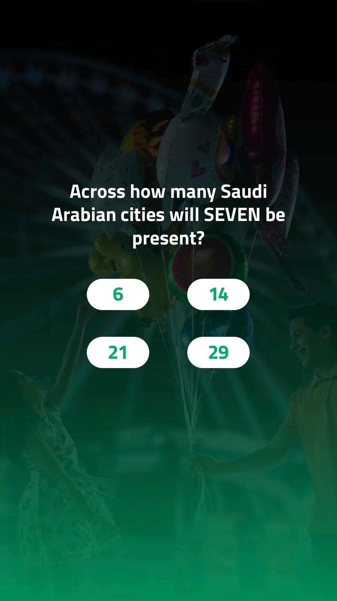
A cyan image treatment separates the destinations question while retaining the four-answer layout. English source version.
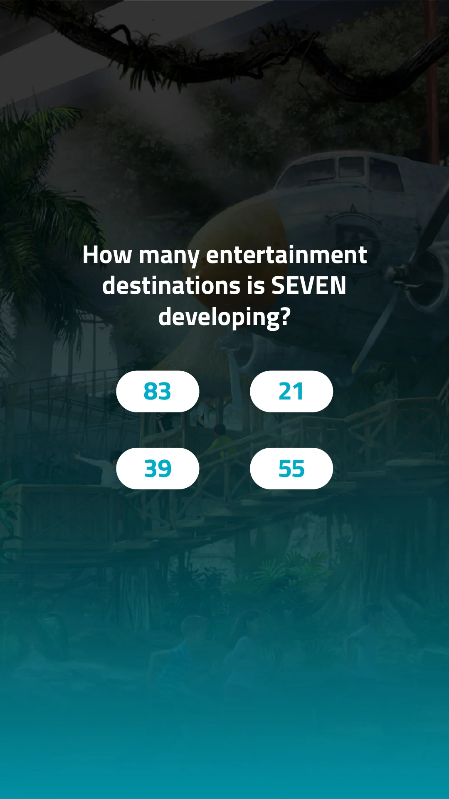
Longer destination combinations use three full-width answers over a purple background. English source version.
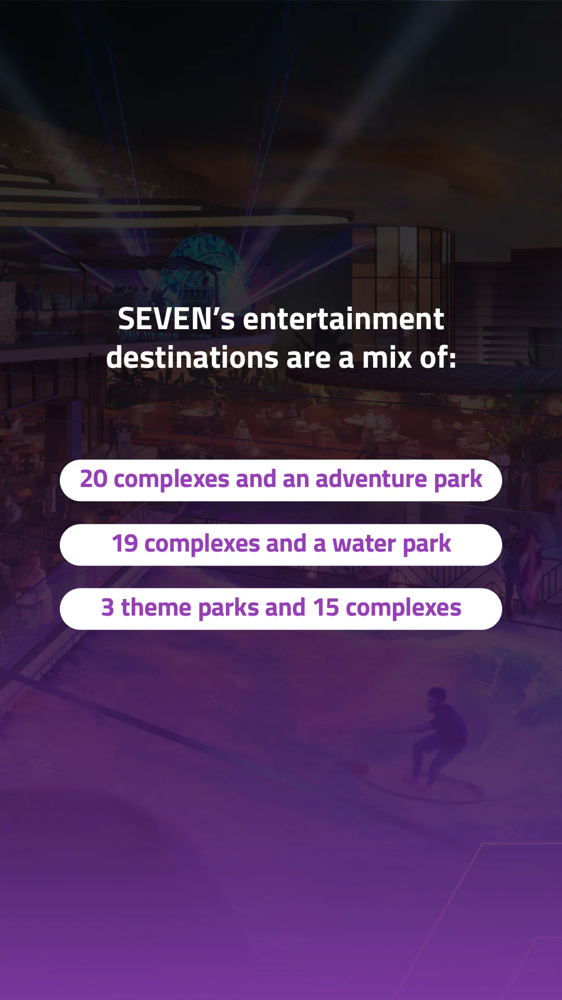
Three short answer choices form a centered stack over the pink question treatment. English source version.
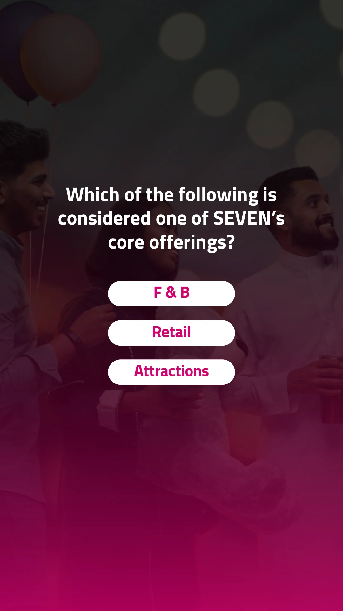
Four text answers use wide pill controls over the orange attractions screen. English source version.
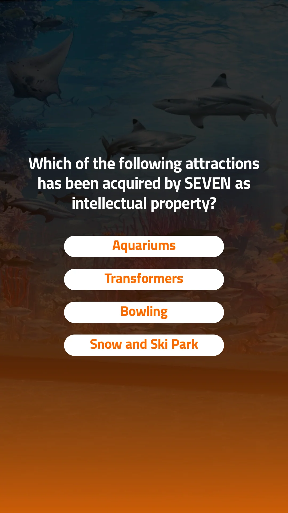
The yellow hotel question returns to four compact numeric answer controls. English source version.
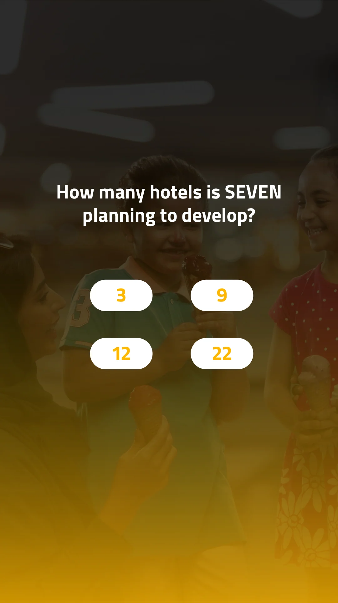
The English result layout displays an example score and retry message.
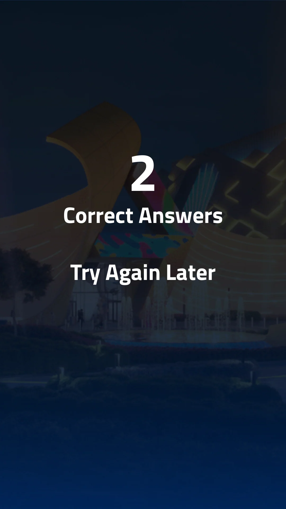
The English success layout uses a score and reward prompt. This is supplied design copy, not a delivered reward.
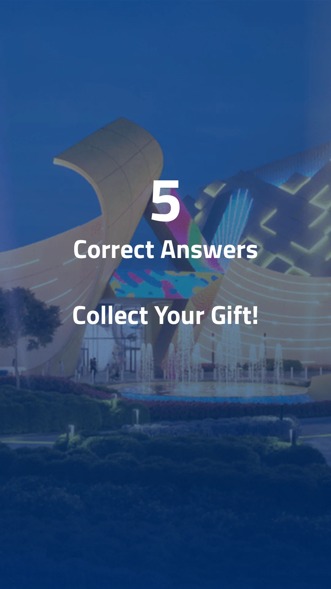
The Arabic introduction pairs blank name and email fields with a submission control.
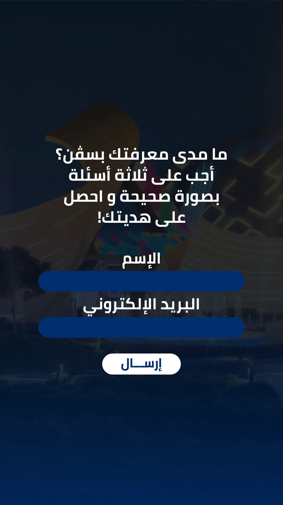
Four compact answer buttons sit beneath the geography question on a green image treatment. Arabic source version.
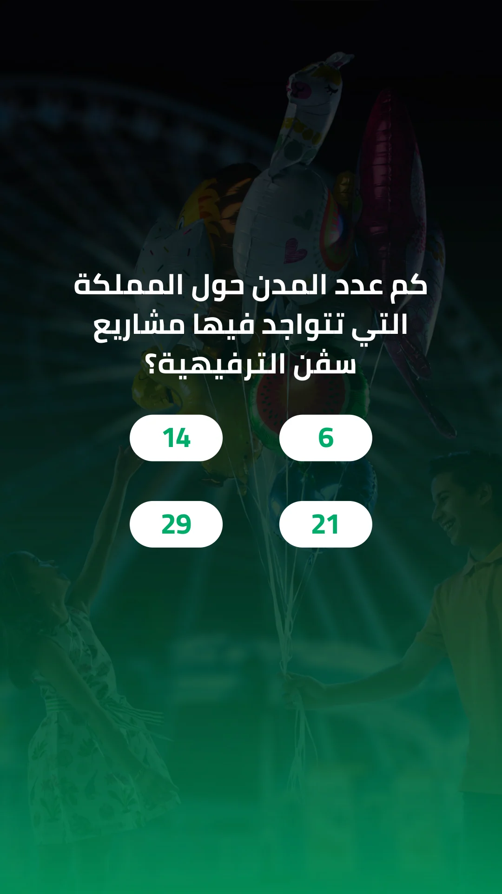
A cyan image treatment separates the destinations question while retaining the four-answer layout. Arabic source version.
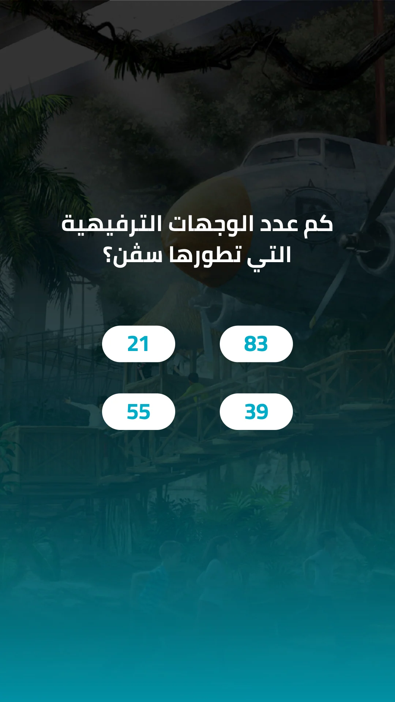
Longer destination combinations use three full-width answers over a purple background. Arabic source version.
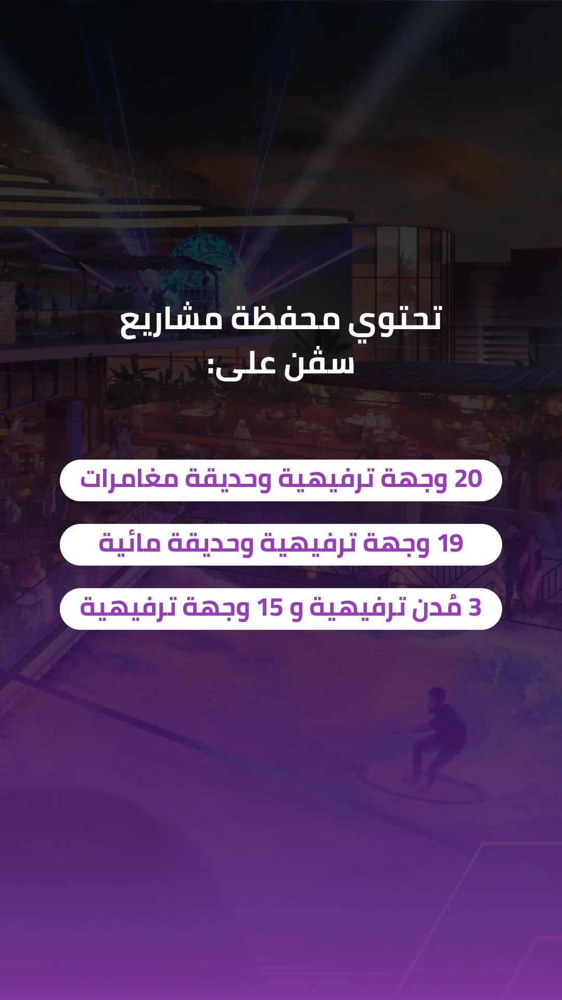
Three short answer choices form a centered stack over the pink question treatment. Arabic source version.
Four text answers use wide pill controls over the orange attractions screen. Arabic source version.
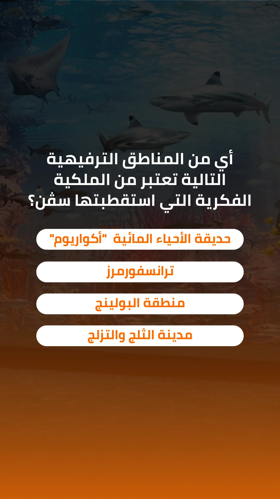
The yellow hotel question returns to four compact numeric answer controls. Arabic source version.
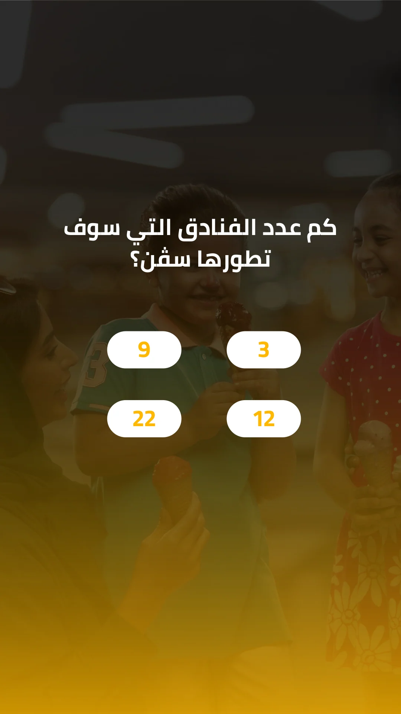
An Arabic result layout displays an example score and retry message.
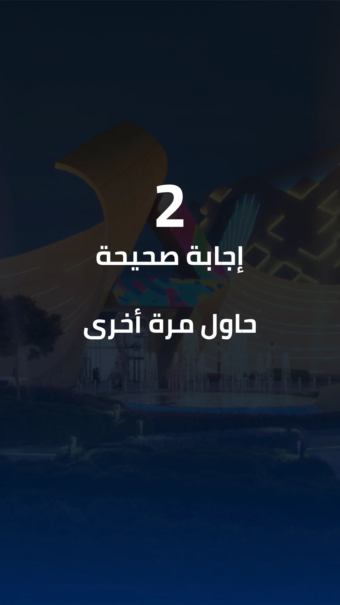
An Arabic success layout uses a score and reward prompt. This is supplied design copy, not a delivered reward.
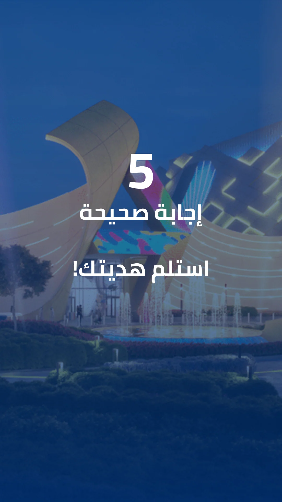
Structure, interaction and visual decisions that give the work its character.
RoleQuiz layout, screen-state design and asset preparation; confirm personal contribution and software responsibility.
AssetsConfirm the architecture-image and font sources, supplied brand assets and any developer collaboration. The organization name is not a client-relationship claim.
StatusInterface design evidenced; runtime and delivery unverified. Gallery imagery remains held because the identity is substantive content.